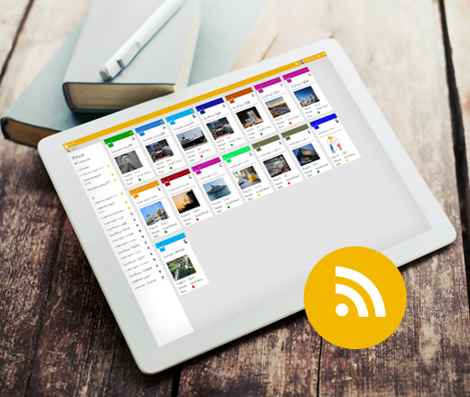
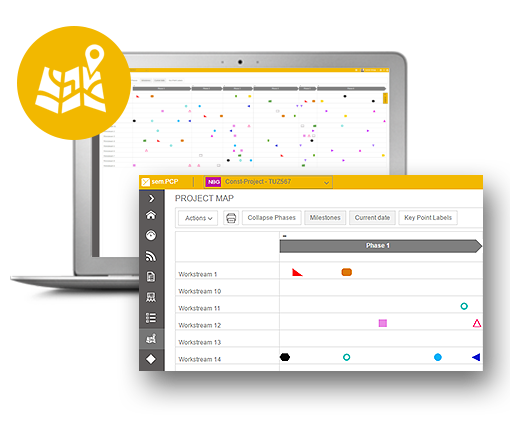
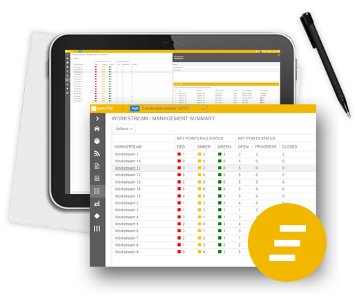
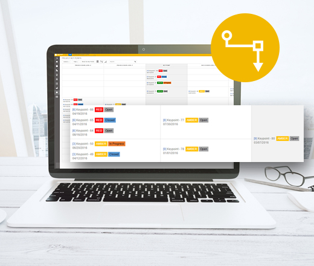
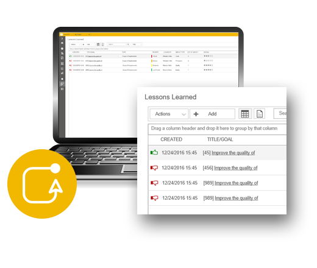
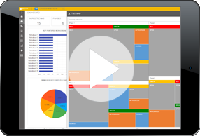

SEMYOU ist generell für alle Unternehmensgrößen geeignet. Durch die skalierbare und flexible Struktur auf der SEMYOU basiert, spielt es keine Rolle, ob Sie eine SEMYOU Anwendung 10 Benutzer oder 10.000 Benutzern zur Verfügung stellen möchten.
sem.PCP
Multi-Projekt-Management-Tool.Einsatzbereit in weniger als 5 min.
79 € PRO MONAT/USER
30 Tage kostenlos testen

sem.PCP
Erfolgreiche Projekte liefern
macht das projektmanagment einfach
und ermoglicht die kollaboration von
uberall aus fur projekt-manager,Team-mitglieder und enstscheidungstrager
Führen Sie Lhre Projekte noch schneller zum Erfolg mit sem.PCP-Projektmanagement Tool.
Multiple-Projektmanagement
Verwalten Sie multiple Projekte an einem zent- ralen Ort und greifen von überall aus einfach darauf zu. Erstellen und planen Sie in wenigen Schritten neue Projekte, die dann Ihrem Pro- jektteam für die Bearbeitung direkt zur Verfü- gung stehen. Während der Bearbeitung
können Sie einfach zwischen Projekten wech- seln, um Bereiche zu vergleichen oder einen Gesamtstatus all Ihrer Projekte einfach zu er- mitteln.


Projektübersicht
Die Projektübersicht ist eine zentrale Ansicht von allen Projekten auf die Sie Zugriff besitzen. Über eine Suchfunktion können Sie auch bei mehreren Projekten schnell auf das Gewünschte Projekt zugreifen oder sich dieses als Favorit kennzeichnen. Neben Projektname, Abkürzung, und Bild, wird in der zentralen Ansicht auch der Projektstatus dargestellt.
Dashboard
Das Dashboard stellt die zentrale Übersicht
über Ihr alle Bereiche Ihres Projekts dar. Über verschiedene Diagramme erhalten Sie schnell einen visuellen Überblick über Status, Verlauf, Komplexität und Inhalt.


Newsfeeds
Stets auf dem neusten Stand
Projektkollaboration stellt bei komplexeren Projekten einen wichtigen Erfolgsfaktor dar. Über die Newsfeeds – Funktionen können alle Projektteilnehmer wichtige Informationen miteinander einfach teilen und schnell abrufen. Verschaffen Sie sich in nur wenigen Minuten einen kompletten Überblick über wichtige Neuerrungen oder Termine in Ihrem Projekt.
Projektlandkarte
& Phasen
Erstellen Sie von Ihrem Projekt eine übersicht- liche Projektlandkarte, die Meilensteine, Ab- hängigkeiten und Verantwortlichkeiten bein- haltet. Jede Projektlandkarte ist in verschiede- ne Phasen gegliedert, um komplexere Zusam- menhänge übersichtlich darzustellen.


Workstreams
Strukturieren Sie Ihre Projekte logisch in un- terschiedliche Arbeitsbereiche mit sog. „Work- streams“. Ein „Workstream“ kann z.B. eine Gruppe, Team, Abteilung oder Ext. Unterneh- men repräsentieren und dient interdisziplinär
in Ihrem Projekt als Referenz für Meilensteine und Aufgaben.
Master-Eckpunkte
Neben den Projektphasen und Workstreams bilden die Master-Eckpunkte (Meilensteine)
eine weitere Methode, um Ihr Projekt in Ar- beitspakete zu gliedern. Erstellen Sie pro Workstream und Phase sog. Master-Eckpunkte (Meilensteine) für abzuschließende Arbeitspa- kete mit entsprechenden Verantwortlichkeiten.


Abhängigkeits-Browser
Stellen Sie komplexe Abhängigkeiten zwischen Prozessen einfach dar. Über verschiedene An- sichten haben Sie die Möglichkeit Abhängig- keiten Ihrer Meilensteine visuell darzustellen, um Engpässe oder einen möglichen Verzug rechtzeitig zu erkennen. Abhängigkeits-Ketten bieten hierfür die Grundlage und bilden je-
weils zwei Ebenen in die Vergangenheit und
die Zukunft ab.
Management Reporting
Erstellen Sie Management-Reports für Ihr Pro- jekt im Handumdrehen und archivieren Sie dieses revisionssicher. Über das Manage- ment-Reporting-Modul haben Sie die Mög- lichkeit einfach einen Status-Report auf Basis Ihrer „Workstreams“ zu erstellen und diesen in sem.PCP abzuspeichern. Über eine Suche kann jeder Management-Report einfach wiederge- funden und angezeigt werden.


Meeting Minutes / Reviews
Wöchentliche Status-Meetings oder Bewer- tungsrunden von Meilensteinen sind grundle- gender Bestandteil jedes Projektes. Erstellen
Sie ein digitales Protokoll Ihrer Meetings/Pla-nungsrunden und referenzieren Sie die be- sprochenen Themen wie Meilensteine, Eck- punkte oder Workstreams. Jedes Protokoll kann mit Teilnehmern, Tag-Kennzeichnungen und einem Memo versehen werden, um später dieses schnell wiederzufinden.
Lessons Learned
Nutzen Sie Ihr Wissen und Erfahrungen aus Ihren laufenden Projekte für die Zukunft und steigern Sie dadurch Ihre Effizient und Effektivität. Halten Sie Ihre Erfahrung während eines Projekts detailliert über die Lessons-Learned Funktionalität in sem.PCP fest und nutzen Sie dieses anschließend für weitere Projekte.

Demos

Erste Schritte in sem.PCP.
Legen Sie Ihr erstes Projekt in sem.PCP an.
Navigieren Sie durch Ihre Projektinformationen
Erkunden Sie SEMYOU
Ihr Büro – überall
Egal ob Sie in Ihrem Büro oder von unterwegs arbeiten, Sie erhalten die besten, Ihnen vertrauten Produktivitäts-Werkzeuge. SEMYOU Anwendungen – immer die neueste Version – machen es Ihnen möglich, von Ihrem PC/MAC oder iOS, Android oder Windows Gerät Daten anzulegen, zu verändern, und mit jedem in Echtzeit zu teilen.

Features
Multiple Projekte verwalten
Veralten Sie multiple Projekte einfach und zentral. Legen Sie problemlos mehrere Projekte in sem.PCP an und verwalten diese in einer Übersicht. Jedes Projekt können Sie individuell konfigurieren und farbliche kennzeichnen um diese einfach zu unterscheiden.
Projekte
individualisieren
Mit der Funktion der Individualisierung haben Sie die Möglichkeit jedes Projekt entsprechend anzupassen. Geben Sie jedem Projekt eine Abkürzung, legen Sie eine individuelle Farbe fest oder hinterlegen Sie ein einsprechendes Projektbild. Durch individuelle Attribute können Sie die bestehenden Felder erweitern, wie z.B. interne Referenznummern o.ä.
Projekte wechseln
Befinden Sie sich aktuell in einem Projekt, so können Sie über das Hauptmenü einfach und bequem zwischen Projekten wech-seln, um diese zu vergleichen oder schnell den Gesamtstatus zu erfassen.
Projekte duplizieren
Kopieren Sie einfach und bequem in wenigen Schritten Ihre Projekte und speichern diese unter neuem Namen ab. Über die „Duplizier-Funktion“ können Sie beispielweise Projekt-Vorlagen erstellen und diese N-Fach für Ihre Projekte kopieren.
Projekt
Dashboard
Das Projekt-Dashboard stellt eine zentrale Übersicht über alle Projektinformationen dar. Über verschiedene, interaktive Diagramme werden alle Projekt-Indikatoren visuell angezeigt und in Verhältnisse gesetzt. Das Dashboard gibt Ihnen einen schnellen Gesamtüberblick über das Projekt das Sie ausgewählt haben.
Projekt -
Berechtigungen
Steuern Sie über Berechtigungen, welcher Benutzer welchen Zugriff auf Ihre Projekte besitzt. Über Rollen haben Sie die Möglichkeit verschiedene Zugriffsschichten zu vergeben und die Benutzung entsprechend einzuschränken.
Projekt Phase
Gliedern Sie Ihre Projekte in strukturierte Phasen und weisen diesen Ihre Meilensteine zu. Die Projekt-Phasen stellen die Grundlage der Projektlandkarte dar und strukturiert Ihr Projekt in abgeschlossene Bereiche.
Projekt
Workstreams
Anhand von „Workstream“ können Sie Arbeitsbereiche wie Teams, Gruppen, Ext.-Firmen o.ä. anlegen, um auf Basis dieser Ihre Meilensteine zu erstellen. Ein „Workstream“ stellt eine Art Projektteam dar, die Sie einfach aufeinander abstimmen können.
Projekt
Key-Points
Unterteilen Sie Ihr Projekt in logische Eckpunkte (Key-Points) z.B. nach Arbeitspaketen und legen deren Abhängigkeiten untereinander fest. Jeder Eckpunkt (Key-Point) definiert den Abschluss eines Arbeitspakets mit Verantwortlichkeit und Eingabe-, Aktions- und End-Bedingungen. Erstellen Sie für jeden Eckpunkt (Key-Point) eine individuelle Check-Liste, um erfüllte Bedingungen zu kennzeichnen.
Export
In sem.PCP haben Sie die Möglichkeit alle Daten einfach zu exportieren. Tabellen und Listendarstellungen können generell als MS-Excel und PDF-Datei exportiert werden.
Drucken Sie einfach die Daten aus sem.PCP aus. Über die Browser-Basierte-Druckfunktion können Sie jeglichen Inhalt beliebig Ausdrucken oder in eigene Formate konvertieren.
Key-Point Abhängigkeits-Matrix
Stellen Sie komplexe Abhängigkeiten über eine Matrix einfach dar und erkennen versteckte Zusammenhänge. Die Matrix stellt alle Ihre Eckpunkte (Key-Points) dar und zeigt deren Transition.
Key-Point
Abhängigkeits-
Designer
Bilden Sie komplexe Abhängigkeiten zwischen einzelnen Eckpunkten (Key-Point) mit dem „Dependency-Designer“ einfach ab. Über die „Drag & Drop“ Funktionalität können Sie Abhängigkeiten erstellen oder wieder auflösen.
Aktive
Projektlandkarte
Die Projektlandkarte stellt die zentrale Projekt-Planungs-Methodik dar und bilden Ihr Projekt mit allen wichtigen Informationen wie Phasen, Meilensteine, Workstreams und Eckpunkte (Key-Points) in einer Ansicht ab. Die interaktiven Funktionen geben Ihnen die Möglichkeit individuelle Bereiche ein- bzw. auszublenden.
Meeting – Minutes
Protokollieren Sie Ihre Besprechungen und Planungsrunden detailliert und stellen Sie diese all Ihren Projektteilnehmern zur Ver-fügung. In sem.PCP können Sie Meeting-Protokolle einfach erstellen und verwalten. Halten Sie wichtige Entscheidungen revisionssicher fest und suchen bei Bedarf schnell danach. Bei jedem Protokoll haben Sie die Möglichkeit Teilnehmer und referenzierte Objekte anzufügen wie z.B. Phase, Workstreams oder Eckpunkte (Key-Points).
Management
Reporting
Erstellen von Management-Report sind denkbar einfach. Verwalten und erstellen Sie Ihre Reports zentral in sem.PCP und greifen einfach über Suchabfragen darauf zu. Jeder Report ist in mehrere Bereiche gegliedert wie gesamt Projektstatus, Kommentare und Workstream-Status.
Newsfeeds
Kollaboration im Team einfach gemacht. Nutzen Sie die Newsfeed Funktion um wichtige Informationen, Neuigkeiten oder Termine mit Ihrem Team zu teilen. Über die Newsfeeds kann sich jeder Projektteilnehmer jederzeit selbst informieren oder wichtige Informationen veröffentlichen.
Aktivitäten-Verlauf
Revisionssicherheit steht in sem.PCP an oberster Stelle. Alle Aktivitäten und Veränderungen die an einem Projekt durchgeführt werden, sind über den Aktivitäten-Verlauf sichtbar. Alle Veränderungen eines Projektes werden chronologisch angezeigt und farblich voneinander getrennt, so dass auch bei vielen Aktivitäten die Übersichtlichkeit gewährleistet ist.
Zuverlässigkeit
Lehnen Sie sich gelassen zurück in dem
Wissen, dass für Ihre Dienste jederzeit eine hohe Verfügbarkeit (99,9 %) geboten wird.
Sicherheit und Compliance auf Unternehmensniveau
Eine skalierbare Lösung muss heute viel mehr als zuvor die Anforderungen von Unternehmen in Bezug auf Sicherheit und Compliance erfüllen, damit einheitliche Richtlinien für alle Prozesse und Geräte zur Anwendung kommen.
Dank der jahrzehntelangen Erfahrung in der Entwicklung von Unternehmenssoftware und Onlinediensten bietet SEMYOU einen Sicherheitsstandard, der keine Wünsche offenlässt. Endbenutzer verfügen über die Produktivität, die sie sich immer gewünscht haben, während die IT-Abteilung sich darauf verlassen kann, dass sowohl die Sicherheit für die Cloud als auch alle anderen notwendigen Compliance-Anforde-rungen gewährleistet sind.

Fragen & Antworten
Für welche Unternehmensgröße ist semyou bestimmt
Ist es möglich auch nur eine APP zu nutzen
In SEMYOU bestimmen Sie welche Anwendung, wie lange Sie nutzen möchten. Hierbei spielt es keine Rolle ob Sie lediglich eine APP oder alle APPS von SEMYOU nutzen. Über den SEMYOU – APP Store können Sie nach Bedarf die Anwendung (APP) nutzen, die Sie aktuell benötigen.
Sicherheit bei SEMYOU
Zugriffssicherheit Ihr SEMYOU Cloud-Office ist durch mehrere Sicherheitsmaßnahmen vor Zugriffen fremder gesichert. Über die SEMYOU Cloud-Office Administration können verschiedene Sicherheitsstufen für Ihr Cloud Office eingestellt werden, wie Zugriffsbeschränkung, Passwortkomplexität, Passwort-Erneuerungsintervalle etc. Lediglich Sie haben vollen Zugriff auf Ihr SEMYOU Cloud-Office und die darin gespeicherten Daten.
Datensicherheit
Die Datensicherheit steht bei SEMYOU an oberster Stelle. Alle Daten und Informationen werden mit modernster Technik verschlüsselt in hoch sicheren Data-Centers gespeichert. Alle Daten werden in regelmäßigen Abständen gesichert und sind auch bei unvorhersehbaren Naturkatastrophen sicher.
Was muss ich installieren, wenn ich mich für SEMYOU Cloud-Office anmelde?
Um SEMYOU Cloud-Office verwenden zu können, müssen Sie nichts installieren. Alle SEMYOU Services befinden sich in der Cloud und können direkt über einen Web-Browser aufgerufen werden. Um die SEMYOU Service nutzen zu können benötigen Sie lediglich ein SEMYOU – Benutzerkonto, das Sie in wenigen Schritten erstellen und einrichten können.
Wie kann ich meinen Vertrag kündigen
In SEMYOU ist die generelle Vertragslaufzeit 30 Tage (1xMonat) und kann monatlich gekündigt werden. Neben den monatlichen Abonnements gibt es zusätzlich Abonnements mit einer längeren Laufzeit, die nach Ende der entsprechenden Laufzeit gekündigt werden können.
Wie ist die Verfügbarkeit von SEMYOU
SEMYOU setzt auf die modernste Technik in Hardware, Software und Betrieb und stellt eine hochverfügbare Umgebung bereit mit einer 99,5 % Verfügbarkeitsgarantie.
Ist für SEMYOU Cloud-Office ein Internetzugang erforderlich?
Um SEMYOU verwenden zu können, benötigen Sie eine permanente Internetverbindung, da sich die APPS nicht lokal befinden, sondern in der SEMYOU Cloud-gehostet werden. Sie arbeiten somit immer auf der aktuellsten Version der SEMYOU APPS und müssen weder neue Updates herunterladen noch installieren
Sind Updates in dem Preis inklusive
In dem monatlichen Abonnementpreis sind alle Updates/Änderungen inklusive. In SEMYOU nutzen Sie immer die aktuellste Version der APP ohne eine Installation/Download durchführen zu müssen.
Gibt es Mengenrabatte für Unternehmen?
Ja. Es gibt Rabatte für SEMYOU Enterprise-Kunden (normalerweise mit 250 oder mehr Lizenzen). Ein SEMYOU-Experte kann Ihnen dabei helfen, die Kaufoptionen für große Unternehmen durchzugehen und zu ermitteln, welche Option für Sie am besten geeignet ist.
Was passiert bei einer Kündigung des Abonnements mit meinen Daten?
Ihre Daten gehören Ihnen. Wenn Sie sich für eine Kündigung Ihrer SEMYOU Abonnements entscheiden, werden Ihre Daten vollständig gelöscht.
Kann ich in SEMYOU verschiedene Abonnements kombinieren?
Jede SEMYOU Anwendung (APP) ist über ein eigenes Abonnement-Modell abgedeckt und läuft völlig autonom. Sie können alle Abonnements getrennt voneinander bequem und flexible verwalten. D.h., Sie können je nach Bedarf bestehenden Abonnements kündigen, erweitern oder neue abschließen.


© SEMYOU 2010 - 2016. All rights reserved.